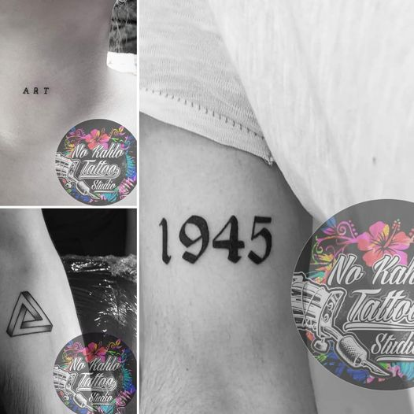
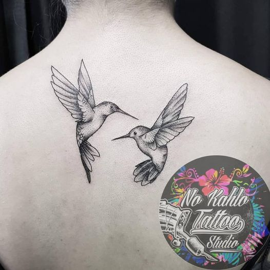

En este estudio encontrarás diseños de todo tipo. Animales y flores realizados con muchísimo detalle, con el talento de No kahlo Tattoo puedes pedir lo que sea.

Es una técnica de tatuaje que se caracteriza por utilizar solo la tinta negra para plasmar diseños.

Puede ir desde sencillas palabras escritas en la caligrafía de alguien querido.

Manchas de color tipo acuarela, dibujos “inacabados” y trazos que imitan el lápiz son algunas de las características de este tatuaje.
Plasmar de forma exacta o dando un twist, aquellos elementos de la cultura popular como los cómics, dibujos animados, animes, personajes de Disney.
Los tatuajes tribales se inspiran en los símbolos rituales que se tatúan o pintan los integrantes de algunas etnias. Algunas veces tienen significados, pero en muchos casos son simplemente estéticos.
Los tatuajes góticos reflejan temas inspirados en el cine de terror clásico: calaveras, castillos siniestros, rosas con sangre, etc.